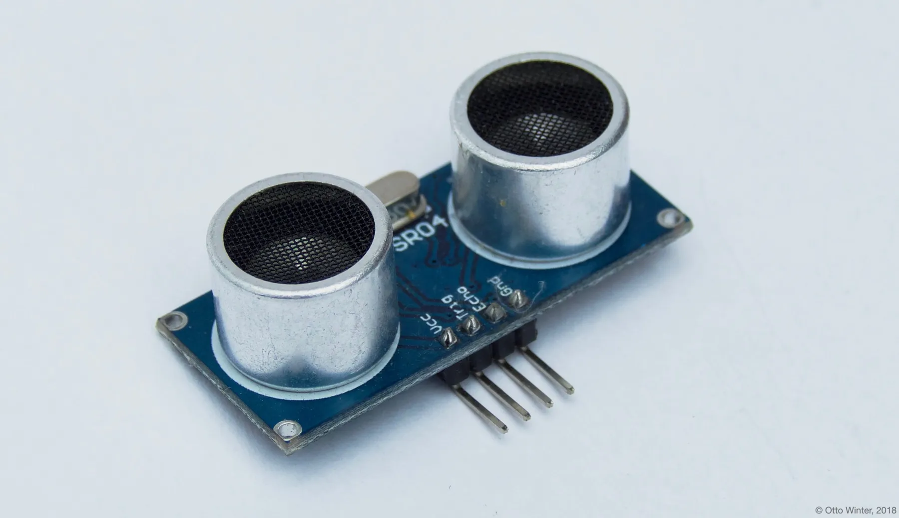
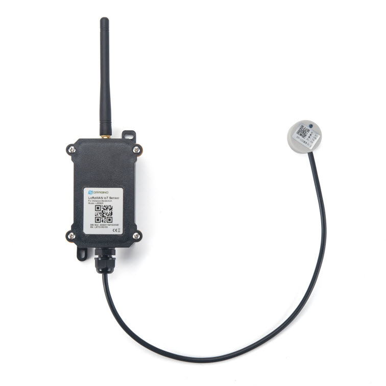

How-to · Sensors
Water tank level sensor for Home Assistant: DIY and LoRaWAN options
A water tank level sensor has one job: tell you how full the tank is, without a ladder and a flashlight. If the tank sits within Wi-Fi range of your house, the cheapest reliable route is an ultrasonic sensor on an ESPHome board feeding Home Assistant directly. If the tank is a cistern or rainwater tank out in the field, LoRaWAN is the honest answer. This page walks through both, plus the Bluetooth option that pairs with Home Assistant without any DIY at all.
Some of this comes from Adam Beguelin's own water tanks, written up on his blog. The details are his; the general guidance is HA News. Nothing here was bench-tested by us — every spec below links to the manufacturer or project documentation it came from.
The problem with mechanical gauges
Adam's tanks originally had mechanical float gauges. They failed "pretty quickly," as he wrote on his blog — the usual story with anything mechanical that sits in water and sun for a year. The fix that lasted: replace the gauge with an ultrasonic probe that fits inside the old gauge fitting. The tank's existing opening becomes the sensor's mounting point, and a small board reads the distance from the sensor down to the water surface.
That is the core trick of nearly every electronic tank level sensor: it is a distance sensor pointed at water. The fill level is tank height minus the measured distance. Everything else — percentage, gallons, low-level alerts — is arithmetic done later, either in the sensor firmware or in Home Assistant.
What happens when the level runs low
A level number is only useful if something happens when it goes wrong. On Adam's build, thresholds live in Cloudflare KV (a simple key-value store) and alerts arrive as Pushover notifications. You do not have to copy that architecture. Home Assistant has a first-class way to do the same thing locally: the numeric state crossed threshold trigger, documented on the Home Assistant automation triggers page.
One behavior from that documentation is worth knowing before you write your first alert. Triggers react at a moment, not while a condition stays true. A level trigger fires when the reading crosses the threshold — once. If you want the automation to keep nagging while the tank stays low, use conditions in the action, not the trigger alone. This one distinction prevents most "why did it only alert once?" confusion.
Option 1: HC-SR04 and ESPHome, the DIY route
Adam's build uses an HC-SR04 ultrasonic depth sensor driven by an ESP8266 board (an Adafruit Huzzah, per his blog post), in a Spiderplant sensor built by his friend Bob. The same design maps directly onto Home Assistant if you prefer to keep the logic at home rather than in outside services.
In ESPHome, the ultrasonic sensor platform (documented for ESPHome 2026.10.2) needs two pins from the HC-SR04: a trigger_pin and an echo_pin. A few settings matter for a tank, and the docs are explicit about them:
- update_interval defaults to 60 seconds. Water level moves slowly; this is fine, and you can slow it further to save power.
- timeout is in meters, defaulting to 2 m. Most hobby sensors only sense up to 2 m anyway. The docs warn that if you set the timeout too long, a no-echo read — a burst, foam, or a sensor facing open air — can look like a valid measurement instead of an error. For a deep tank, that is a real gotcha: a "very full" reading may actually be a failed reading. Set the timeout to match your tank, not more.
- pulse_time defaults to 10 µs. Leave it unless the manufacturer of your specific module says otherwise.
The platform returns a distance. To turn it into a tank level, the docs' own pattern applies: subtract the measured distance from the known tank height using a filter or a template sensor in the ESPHome config. Calibrate against reality by checking the reading at a known fill point — one known depth is enough to catch an upside-down or misplaced constant.

Once the level entity exists in Home Assistant, the crossed-threshold trigger above takes care of alerts, and a history graph takes care of the leak-you-didn't-know-you-had. If you are new to the board side, our ESP32 projects guide covers the wider family, and our water leak sensor guide covers the other liquid problem worth sensing. Ready-made boards for this kind of build appear under an ESP8266 search on Amazon and an HC-SR04 search on Amazon; pick board variants with good community support.
Option 2: Mopeka Bluetooth sensors, the no-solder route
If soldering is not on the table, Mopeka's Bluetooth tank sensors pair natively with Home Assistant. Per the Home Assistant Mopeka integration, the integration auto-discovers the devices over Bluetooth and uses local push — the readings arrive without a cloud account. (The integration was added in Home Assistant 2023.2, per the same page.)
Two details from the documentation to get right: you pick a "medium" for each device so the ultrasonic coefficients match the substance it is measuring, and for water tanks specifically the docs point to the "Air" medium for unpressurized top-down sensors and "Fresh Water" for bottom-up ones. Supported devices listed on that page include the Pro Plus (M1015), Pro Check (M1017), Pro-200, Pro H2O, Lippert BottleCheck, TD40, TD200 and Pro Check Universal. Model variants show up under a Mopeka Pro H2O search on Amazon. The catch is range: Bluetooth needs the Home Assistant machine — or a Bluetooth proxy — within earshot of the tank.
Option 3: LoRaWAN for cisterns and rainwater tanks
For a tank beyond Wi-Fi range, the answer is low-power long-range radio. The Dragino LDDS20 is a LoRaWAN ultrasonic liquid level sensor with a genuinely practical mounting trick: it is non-contact. Per Dragino's product page, it mounts directly below the container and measures through the container wall — no hole to drill, no sensor in the liquid. The manufacturer says it works for acids and alkalis and for airtight tanks, which makes it one of the few options for tanks you cannot open or penetrate.

Specs from Dragino's page and the DDS20-LB user manual:
| Spec | Dragino LDDS20 |
|---|---|
| Method | Ultrasonic, non-contact, through the container wall (mounts below the tank) |
| LoRaWAN | 1.0.3 Class A |
| Bands | EU868, US915, CN470, KR920, AS923, AU915, IN865, EU433 |
| Battery | 8500 mAh Li-SOCl2, rated up to 10 years |
| Provisioning | Pre-loaded OTAA keys |
| Install notes | Coupling paste and epoxy required for mounting; often not included in the box |
| Variants | Newer DDS20-LB/LS models, default uplink every 20 minutes with ACK and store-and-forward |
Two practical notes from the manufacturer documentation. First, the mounting is not peel-and-stick: you need coupling paste for the acoustic bond to the tank wall and epoxy to hold the unit, and both are commonly omitted from the box — order them with the sensor. Second, a LoRaWAN sensor needs a gateway within radio range; if you are setting one up for a property with a single remote tank, our LoRaWAN gateway guide covers the gateway side, including public network options. Retail listings appear under a Dragino LDDS20 search on Amazon.
How did the DIY probe compare in the field? Adam's post describes the mechanical gauges failing quickly and the ultrasonic replacement holding up — one data point, from one property, but it matches what the sensor physics suggest: fewer moving parts in the water means less to fail.
Which one should you build or buy?
- Tank in Wi-Fi range, comfortable with small DIY: HC-SR04 on an ESPHome board. Cheapest hardware, fully local, and the level lives as an ordinary Home Assistant entity. Mind the
timeoutsetting so failed reads don't masquerade as full tanks. - Tank in Wi-Fi range, no soldering: a Mopeka sensor on the Bluetooth integration. Auto-discovery, local push, no cloud account, per the HA docs.
- Remote cistern, rainwater tank, or airtight tank you can't drill: the Dragino LDDS20 over LoRaWAN, plus a gateway. Non-contact mounting, multi-year battery life per the manufacturer.
Whatever you pick, the alert design is the same: measure, convert distance to level, and alert on the crossing of a threshold — in Home Assistant with the numeric state crossed trigger, or through whatever notification channel your build already trusts. Water you can measure is water you can schedule: pumps, refills and leak detection all fall out of the same one number.
FAQ
What is the best water tank level sensor for Home Assistant?
For a tank within Wi-Fi range, an HC-SR04 ultrasonic sensor on an ESPHome board is the cheapest reliable option. For tanks out of Wi-Fi range, a LoRaWAN ultrasonic sensor such as the Dragino LDDS20 is the way to go. Mopeka Bluetooth sensors pair natively with Home Assistant.
Can I measure tank level without drilling (non-contact ultrasonic)?
Yes. The Dragino LDDS20 is a non-contact LoRaWAN ultrasonic liquid-level sensor that mounts directly below the container and measures through the container wall, with no hole and no contact with the liquid. The manufacturer says it works for acids and alkalis and for airtight tanks.
How do I measure water tank level with an HC-SR04 and ESPHome?
Use the ESPHome ultrasonic sensor platform with a trigger_pin and echo_pin on the HC-SR04. The sensor returns a distance; convert it to a fill level by subtracting the measured wall distance from the tank height using a filter or template in the ESPHome config.
How do I set up a low water level alert with the numeric state crossed threshold trigger?
Create a Home Assistant automation using the numeric state crossed threshold trigger on your tank level sensor, then notify yourself through your preferred service. Note that a trigger fires on the crossing, not while the level stays low, so pair it with conditions if you want repeat alerts.
What LoRaWAN sensors work for remote cisterns and rainwater tanks?
The Dragino LDDS20 ultrasonic liquid level sensor runs on LoRaWAN 1.0.3 Class A, supports EU868, US915 and other regional bands, and runs up to 10 years on an 8500 mAh Li-SOCl2 battery. It needs a LoRaWAN gateway within range.
Does the Mopeka Pro H2O work with Home Assistant for water tanks?
Yes. The Mopeka integration, added in Home Assistant 2023.2, auto-discovers Mopeka sensors over Bluetooth with local push. Supported devices include the Pro H2O; you set the medium per device so the ultrasonic coefficients match the substance.
As an Amazon Associate, HA News earns from qualifying purchases.